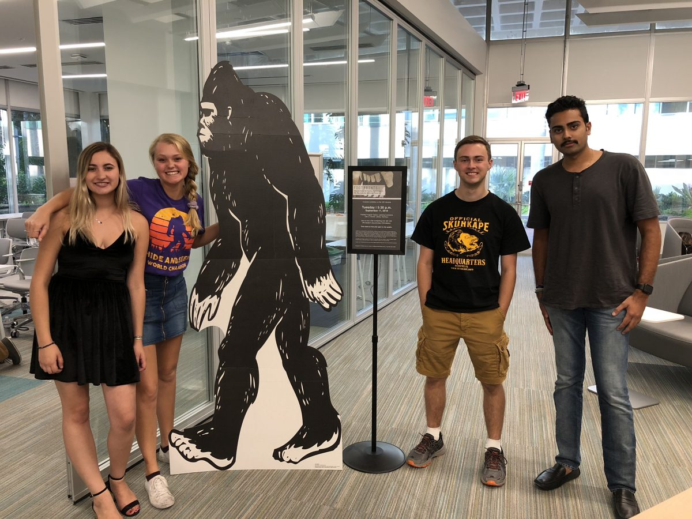

The Producers...
The documentary was produced by University of Miami students as part of an upper-level Electronic Midea Production course through the broadcast journalism major. The group worked on the project throughout the Spring 2018 semester.
Pictured in the photo are Production Assistant Maddi Brown, Executive Producer Erika Orstad, Associate Producer Ben Ezzy, and Production Assistant Sagar Sharma.
Absent from the photo are Executive Producer Rebekah Chung, Production Assistant Robyn Shapiro, Production Assistant Andrew Blechman, and Production Assistant Cory Nigrin.